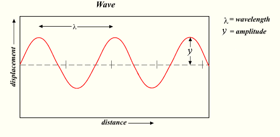

No Harmony
No Speech
What about this?
Or this?
Species of Imitation
| Harmony | Rhythm | Language | ||
|---|---|---|---|---|
| Harmony | x | |||
| Rhythm | x | |||
| Language |
Can you check off the boxes that correspond to the different art forms?
Imitative Piping
Dance
Speech, Rhetoric
Speech
Other forms of rhetoric
Art Criticism
What is Aristotle’s response to Plato’s various critiques?
Religious
Moralistic
Psychological
Political
Understanding Greek Poetry
Understanding Art
Observing paintings, novels, plays, stories, films, etc.
What are they made of,
how do they work
what purposes do they serve
what are the means by which they serve these purposes
how do peple understand and appreciate them
What roles do they play in our collective historical and collective histories?
Through a technical analysis, we see other questions begin to emerge.
Their metaphysical constituents, theories of language, and knowledge.
1. Definitions
Defining poetry as a general category of representational arts, or mimesis. This category includes visual arts, poetry, music, and dancing.
We begin with three categories of inquiry.
2. Historical Precedent
The second recognition by Aristotle, is that Poetry has a history.
A part of that history includes literary criticism, and literary history for instance.
He views this history in the contexts of other cultural evolutionary markers such as the cultural evolution of tragedy and comedy.
Mimesis, is an approach to art criticism which did not begin with Aristotle.
3. Establishing Genre Boundaries
The third element of this work includes the establishment and employment of genre.
For Aristotle, genre is a scheme of enquiry that seeks to provide conditions through which mimetic concepts such as media, mimetic objects, and modes are delimited. In other words, he develops:
Conditions for categorizing this class of object
Concepts that relate to this class of object
Modes of inquiry in which to explore items in this class of object
asserts the significance of formal design and unity for both the composition and the appreciation of literary works, and to offer a conception of artistic form which relates it to the organic forms crucial to his understanding of nature. [(hall95?), 10; 50b34-51a6]
Although we might call this approach ‘formalist’, a question arises about the necessity of genre concepts inferred in a particular mimetic example.
For instance, he references Plato’s analysis of mimetic modes in Ch. III of this work.
However, for Aristotle, mimesis is an attempt to understand the broader world, by reference to the human propensity to represent human experiences through fictive representation, and imaginative reenactment.
In this way, Aristotle likely hopes to connect art to human nature as a capacity for human desire to understand universal concepts whether moral, religious, ethical, or relational.
Mimesis, imitation
The way we begin to look at Aristotle’s project, is by first understanding who his audience is and what they know.
There are several points here. First, his audience will likely be familiar with Plato. They will know something about his forms, his disdain for the artists, etc.
Next, they will likely be familiar with the artistic examples that Plato condemns. Perhaps however, they, much like us may have questions as to what his critique of these art forms actually were.
And as such, this is where we begin.
Poetry as a subject
Epic, Tragedy, Comedy, Dithyrambic, flute and lyre playing
Ilyliad, Odyssey, Metamorphosis, apparently “the mime of Sophron or Xenarchus”. The works of Homer, Aeschylus, Sophocles, Empedocles. They would also have been familiar with Plato’s works such as the Phaedrus and the Symposium for instance.
First difference: Rhythm, language, harmony.
Harmony and rhythm by themselves correlate with flute and lyre playing. But imagine the lyre or flute without harmony or rhythm, e.g., imitative piping. It would seem that here, there is a difference in the object of representation, the object that is being represented. The way in which the object is represented, and the means through which it is represented.
There are three different possibilities with respect to imitation.
Means, Manner, and Object
Means of Imitation
Consider some categories:
Rhythm but without harmony, drum and dance for instance.
Language without rhythm or harmony, speech and rhetoric. Or language with rhythm but not harmony.
Even if a theory of medicine or physical philosophy be put forth in a metrical form, it is usual to describe the writer in this way;
There are, lastly, certain other arts, which combine all the means enumerated, rhythm, melody, and verse, e.g. Dithyrambic and Gnomic (verses of short characteristically wise sayings) poetry, Tragedy and Comedy;
Form vs. Content
How do we accurately depict life? What is the best way to tell a story?
This leads to the second difference . . .
Actions with respect to characters, good or bad.
The objects the imitator represents are actions, with agents who are necessarily either good men or bad – the diversities of human char acter being nearly always derivative from this primary distinction, since the line between virtue and vice is one dividing the whole of mankind. (1448a)
What are the appropriate objects of representation
Appropriate ways we should represent these objects?
The actions of good and bad men
Attributing character to the actions of men
The manner in which it is represented.
Narrative vs character, choose one, or represent dramatically.
The three differences are means, objects, and manner.
Imitation as Telos
Imitation is natural to man from childhood, one of his advantages over the lower animals beings this, that he is the most imitative creature in the world.
He also delights in works of imitation.
- realistic representations, even if they go against our desires.
Types
Epic poetry, tragedy, comedy, dithyrambic poetry, flute playing, lyre playing = modes of imitation
The three main differences
Each type of poetry (art) differ from the other in three ways
Means of imitation
Objects of representation
Manner of their imitations
Is epic poetry denoted by 1, and 2, but not 3?
A brief
A combination of harmony and rhythm alone is the means in flute-playing and lyre-playing, and any other arts there may be of the same description, e.g. imitative piping. Rhythm alone, without harmony, is the means in the dancer’s imitations; for even he, by the rhythms of his attitudes, may represent men’s characters, as well as what they do and suffer.
Purpose and Telos as a Mimetic Object
Delight
Mental image of beauty
e.g., grandfather, and memory of grandfather
Is one more valuable than the other?
Mental and physical pleasure
Mental pleasure, e.g., memory of grandfather
Physical pleasure, e.g., sight of grandfather
Learning
Learning through pleasure
Why?
Intimacy between our souls and our flesh
Classification of Pleasure
| Mental | Physical | |
|---|---|---|
| Object of higher pleasure | Memory of grandfather | |
| Object of lower pleasure | Sight of grandfather |
But this doesn’t seem right!
Augustine on Music

Who was Saint Augustine?
Saint Augustine was born in North Africa in 354 CE. Most notably, he is known for both his City of God, (De Civite Dei) and his Confessions, (Augustini Confessiones). Famously, Augustine’s mother, Saint Monica, was a devout Christian while his father was a Roman official. Being a Roman official in 354 CE, also meant that his father was a pagan a fact often reflected on by Augustine in his Confessions especailly Famously, Augustine’s mother, Saint Monica, was a devout Christian while his father was a Roman official. Being a Roman official in 354 CE, also meant that his father was a pagan a fact often reflected on with some expressions of regret by Augustine in his Confessions especailly.
Augustine is often known for his reflections on his youth and his conversion to Christianity. More importantly, much of his mature and independent philosophical work (not necessitated by duties of his office for instance) focuses on his theological reflections and philosophical claims regarding his ability to know about abstract concepts such as God, the soul, and the afterlife.
De Musica
We must not hate what is below us, but rather with God’s help put it in its right place, setting in right order what is below us, ourselves, and what is above us, and not being offended by the lower, but delighting only in the higher.
De Musica is one of Augustine’s lesser known treatises. More central to scholarly focus on his writings, are typically his theological claims, epistemology, what can be known and how, and his philosophy of mind, his theses of concepualizing the difference between soul and body. However, De Musica provides a unique insight into Augustine’s reflections on the role of music in his own conversion and other spiritual experiences. He begines with what might be called a commandment, or psychological admonition.
- Perception of the beautiful
- and its constrast against perception of evil
- How to do it?
This is an important claim. Consider two kinds of non-profit organizations. One is defined by all the things it is against, e.g., anti-war, anti-poverty, anti-racism, etc. The other defines itself by all the things that it is for, to promote peace, love, unity, etc.
But from his claims about perception, are those about what improves perception in such a way that it contributes to memory. Namely, we have first two kinds of event. Augustine admonishes us to focus on beautiful events and not ugly ones. But what are some practical ways in which we can focus on the one and not the other? While perception through experience enables one kind of reflection, there are other kinds of reflection that we are capable of, even if we have not had the experience.
Also as important, one aspect of what enables the right kind and object of perception, has to do with reflection. Is reflection merely a kind of perception where there is some object that once was external but now is internalized? For instance, consider what his says about the differences between his knowledge of his father and grandfather.
I think differently about my father whom I have seen and about my grandfather whom I have never seen. My thought of my father comes from memory, but my thought of my grandfather comes from mental movements arising out of other mental movements which are contained in memory.
When considering what kinds of reflections we are capable of, the next question is how do we improve our ability to reflect on the beautiful and not the ugly? For Augustine, this is the place of music and why God has given us the capacity for music. But in order to understand why music, we have to first think about what music is.
Our rhythmic or metric art, which is used by makers of verses, comprises certain rhythmical measurements according to which they make the verses.

For Augustine, there is an important relationship between random sounds, and time. What is the difference between a musical note, say ‘A’ as produced by the strike of a hammer on a piano string, and a child striking a mallet on a taut piece of wire? It helps to understand something about the metaphysics of music here. For instance, we might know that what we experience as sound, is a collection of vibrations either through the air, or another medium such as a piece of wood or metal. We typically measure these vibrations in the form of Hertz. The measurement, if I am not mistaken, is taken in a similar fashion to how we measure other waves such as radio, ocean, etc. I will not begin to make any further claims about the physics of sound, except to draw attention to rhythm as a measurement of time, and music as a measurement of sound in relationship to time. Therefore, if we hit a medium such as a piano string with a mallet or hammer, and it so happens to be taut enough such that upon being hit, it will vibrate in such a way that it produces a succession of waves that can be measured at 440 Hz, meaning 440 waves per whatever unit of time is selected as standard, then we will hear the note ‘A’.
Additionally, what we experience as different sounds, are the different frequencies at which these vibrations occur. In western music, most instruments are tuned to a standard frequency of 440 Hz.
Purpose and Telos as a Mimetic Object
Delight
Mental image of beauty
e.g., grandfather, and memory of grandfather
Is one more valuable than the other?
Mental and physical pleasure
Mental pleasure, e.g., memory of grandfather
Physical pleasure, e.g., sight of grandfather
Learning
Learning through pleasure
Why?
Intimacy between our souls and our flesh
Classification of Pleasure
| Mental | Physical | |
|---|---|---|
| Object of higher pleasure | Memory of grandfather | |
| Object of lower pleasure | Sight of grandfather |
But this doesn’t seem right!
Augustine on Music
Who was Saint Augustine?
Saint Augustine was born in North Africa in 354 CE. Most notably, he is known for both his City of God, (De Civite Dei) and his Confessions, (Augustini Confessiones). Famously, Augustine’s mother, Saint Monica, was a devout Christian while his father was a Roman official. Being a Roman official in 354 CE, also meant that his father was a pagan a fact often reflected on by Augustine in his Confessions especailly Famously, Augustine’s mother, Saint Monica, was a devout Christian while his father was a Roman official. Being a Roman official in 354 CE, also meant that his father was a pagan a fact often reflected on with some expressions of regret by Augustine in his Confessions especailly.
Augustine is often known for his reflections on his youth and his conversion to Christianity. More importantly, much of his mature and independent philosophical work (not necessitated by duties of his office for instance) focuses on his theological reflections and philosophical claims regarding his ability to know about abstract concepts such as God, the soul, and the afterlife.
De Musica
We must not hate what is below us, but rather with God’s help put it in its right place, setting in right order what is below us, ourselves, and what is above us, and not being offended by the lower, but delighting only in the higher.
De Musica is one of Augustine’s lesser known treatises. More central to scholarly focus on his writings, are typically his theological claims, epistemology, what can be known and how, and his philosophy of mind, his theses of concepualizing the difference between soul and body. However, De Musica provides a unique insight into Augustine’s reflections on the role of music in his own conversion and other spiritual experiences. He begines with what might be called a commandment, or psychological admonition.
- Perception of the beautiful
- and its constrast against perception of evil
- How to do it?
This is an important claim. Consider two kinds of non-profit organizations. One is defined by all the things it is against, e.g., anti-war, anti-poverty, anti-racism, etc. The other defines itself by all the things that it is for, to promote peace, love, unity, etc.
But from his claims about perception, are those about what improves perception in such a way that it contributes to memory. Namely, we have first two kinds of event. Augustine admonishes us to focus on beautiful events and not ugly ones. But what are some practical ways in which we can focus on the one and not the other? While perception through experience enables one kind of reflection, there are other kinds of reflection that we are capable of, even if we have not had the experience.
Also as important, one aspect of what enables the right kind and object of perception, has to do with reflection. Is reflection merely a kind of perception where there is some object that once was external but now is internalized? For instance, consider what his says about the differences between his knowledge of his father and grandfather.
If syllables in a poem had life and perception for just as long as their sounds lasted, the rhythmicality and beauty of the whole intricately inwoven work could not give them pleasure.
But before we get to the kinds of reflections, we start first with what amounts to the beautiful. This begins with a description of the world as it is, not necessarily how we experience it.
I think differently about my father whom I have seen and about my grandfather whom I have never seen. My thought of my father comes from memory, but my thought of my grandfather comes from mental movements arising out of other mental movements which are contained in memory.
When considering what kinds of reflections we are capable of, the next question is how do we improve our ability to reflect on the beautiful and not the ugly? For Augustine, this is the place of music and why God has given us the capacity for music. But in order to understand why music, we have to first think about what music is.
Our rhythmic or metric art, which is used by makers of verses, comprises certain rhythmical measurements according to which they make the verses.
For Augustine, there is an important relationship between random sounds, and time. What is the difference between a musical note, say ‘A’ as produced by the strike of a hammer on a piano string, and a child striking a mallet on a taut piece of wire? It helps to understand something about the metaphysics of music here. For instance, we might know that what we experience as sound, is a collection of vibrations either through the air, or another medium such as a piece of wood or metal. We typically measure these vibrations in the form of Hertz. The measurement, if I am not mistaken, is taken in a similar fashion to how we measure other waves such as radio, ocean, etc. I will not begin to make any further claims about the physics of sound, except to draw attention to rhythm as a measurement of time, and music as a measurement of sound in relationship to time. Therefore, if we hit a medium such as a piano string with a mallet or hammer, and it so happens to be taut enough such that upon being hit, it will vibrate in such a way that it produces a succession of waves that can be measured at 440 Hz, meaning 440 waves per whatever unit of time is selected as standard, then we will hear the note ‘A’.
Additionally, what we experience as different sounds, are the different frequencies at which these vibrations occur. In western music, most instruments are tuned to a standard frequency of 440 Hz.
1. External
- enlightens mind for appreciation of the arts crafts
weaving
armor-making
agriculture
hunting
navigation
medicine
fine-arts
Two types of purposes
Consolation, fine arts
Comfort, everything else
2. Sense Perceptions
Four Elements
But what about essense?
Enables us to discern natural forms.
Begins with a material object, requires corporeal light.
Five Divisions
Corresponding with five senses.
sight
hearing
smell
taste
touch
3. Reason
Consider:
Speech
natural philosophy
things
moral philosophy
and conduct
Purpose?
Express
Teach
Persuade
Apprehend
Judge
Motivate
4. Higher
Spiritual Truths
Moral ones
Purpose of the previous two
Faith
Morals
Purpose of faith and morals